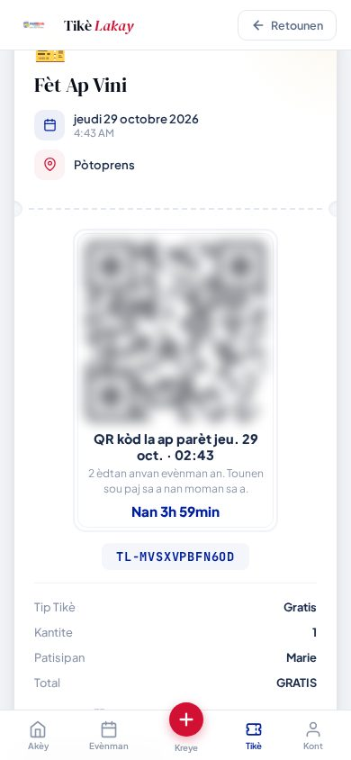
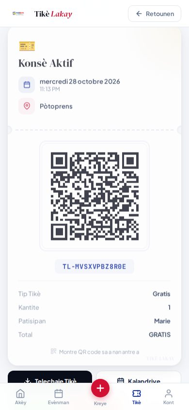
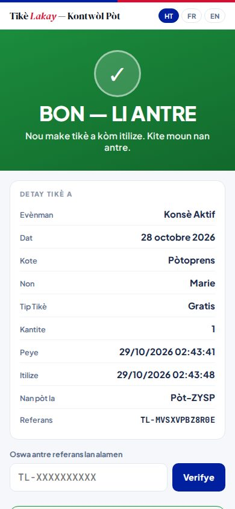
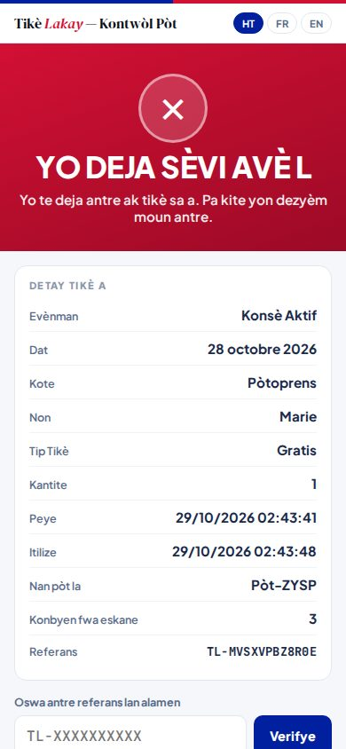
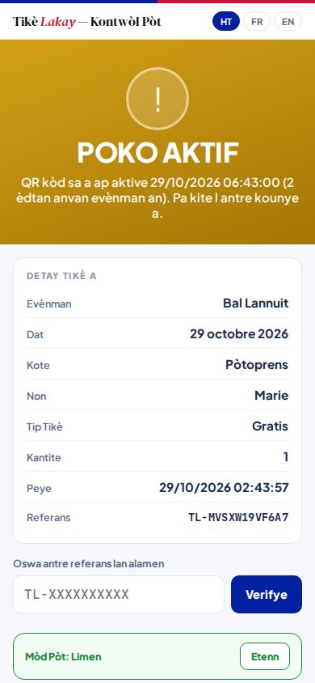
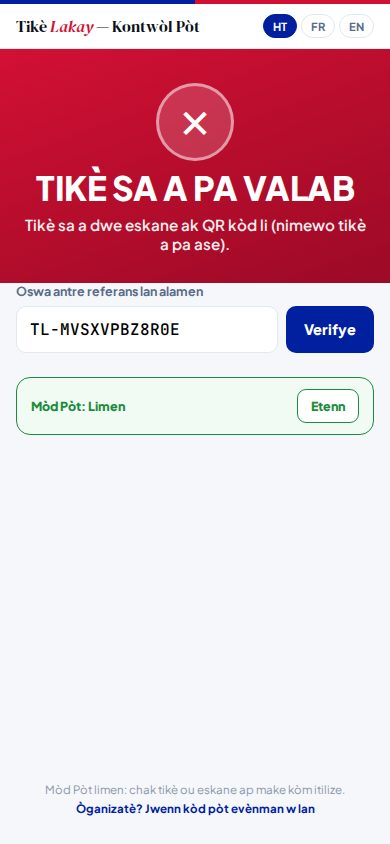

Vrè paj yo, teste sou yon kopi (pa sou sit la an dirèk). Evènman ak non yo se tès. Pa gen lajan ki te deplase.
QR la twoub, ak kontè a. Sèvè a pa voye OKENN kòd: sa ki twoub la se kare o aza, pa gen anyen dèyè l.

Vrè QR la parèt poukont li (menm paj la, san rafrechi). Li gen yon kòd sekrè, pa nimewo tikè a.

Premye eskanè ak kòd pòt la: "BON — LI ANTRE". Tikè a make itilize.

Yon lòt telefòn eskane menm QR la (screenshot) menm 3 segonn apre: wouj, pa kite l antre. 5 telefòn an menm tan: 1 sèl VALAB (teste).

Menm si yon moun jwenn kòd la davans, sèvè a refize l anvan lè a, epi li PA make tikè a itilize.

Kòd envante, evènman anile, oswa sèlman nimewo tikè a tape alamen: refize.
